New Modalities
End-to-End
Antibody-Drug Conjugate (ADC)
Development & Manufacturing
삼성바이오로직스는 세계 최고 수준의 항체 생산 역량을 기반으로 ‘항체약물접합체(Antibody-Drug Conjugates)’로
포트폴리오를 확장합니다.
ADC는 항체와 약물 및 링커를 접합하여 만든 치료제로, 높은 효능과 낮은 부작용으로 차세대 바이오의약품으로 각광
받고 있습니다.
About Samsung Organoids
Core Capabilities
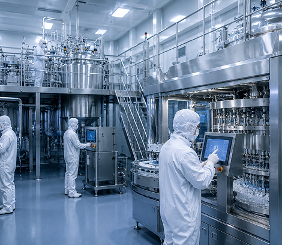
ADC 전용 생산 시설
세계 최고 수준의 항체 생산 인프라 기반
신속하고 유연한 ADC 생산 지원
Quality & Supply Chain
안정적인 공급망과 글로벌 수준의
품질 관리 시스템 운영
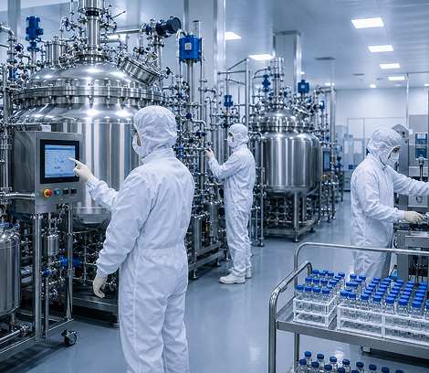
Flexible Manufacturing
고객 니즈에 맞춘 다양한 생산 옵션 제공
Why Samsung Organoids?
01
Faster Discovery
초기 후보물질 발굴 및 검증 시간 단축
02
Predictive Accuracy
임상 예측 신뢰도를 높이는 정밀 모델
03
Data-Driven Research
임상 예측 신뢰도를 높이는 정밀 모델
04
End-to-End Support
연구부터 임상 단계까지 통합 지원
About Samsung Organoids
Core Capabilities
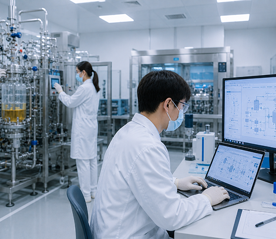
ADC 전용 생산 시설
세계 최고 수준의 항체 생산 인프라 기반
신속하고 유연한 ADC 생산 지원
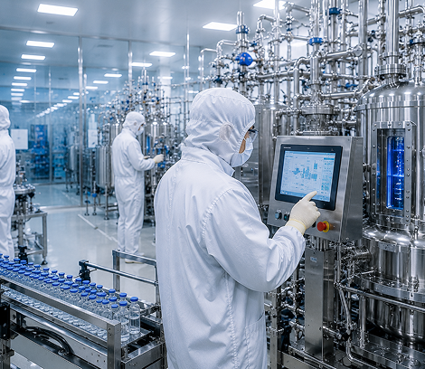
Quality & Supply Chain
안정적인 공급망과 글로벌 수준의
품질 관리 시스템 운영
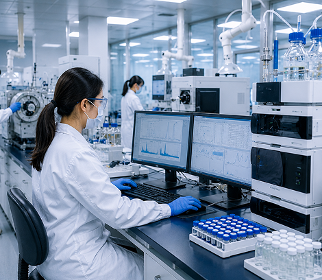
Flexible Manufacturing
고객 니즈에 맞춘 다양한 생산 옵션 제공
mRNA Manufacturing and Development Services
The Power of One
삼성바이오로직스는 탁월한 위탁개발 생산 역량과 최첨단 기술을 바탕으로 원스톱 mRNA 솔루션을 제공합니다.
바이오 연구소를 통한 mRNA-LNP(지질나노입자) 연구개발 등 차세대 첨단제조, 공정기술을 신속하게 지원하며 세계
최고 수준의 기술경쟁력을 바탕으로 고객 만족을 향해 나아갑니다.
About Samsung Organoids
Core Capabilities
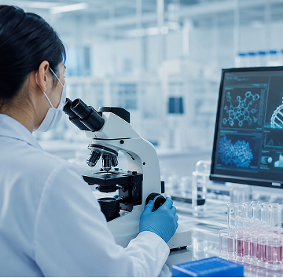
ADC 전용 생산 시설
세계 최고 수준의 항체 생산 인프라 기반
신속하고 유연한 ADC 생산 지원
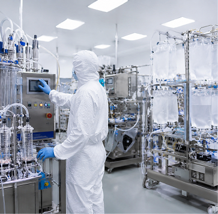
Quality & Supply Chain
안정적인 공급망과 글로벌 수준의
품질 관리 시스템 운영
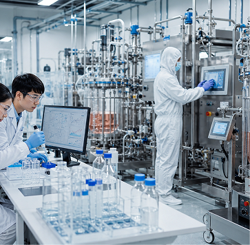
Flexible Manufacturing
고객 니즈에 맞춘 다양한 생산 옵션 제공
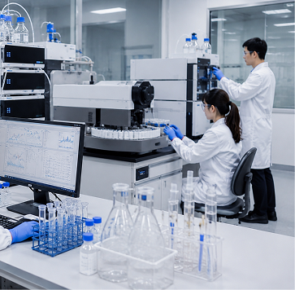
Flexible Manufacturing
고객 니즈에 맞춘 다양한 생산 옵션 제공
Step 01
Monoclonal Antibody
Step 02
Bispecific / Multispecific Antibody
Step 03
Recombinant Protein
Step 04
Fc Fusion Protein
Step 06
Antibody-Drug Conjugates
About Samsung Organoids
Core Capabilities
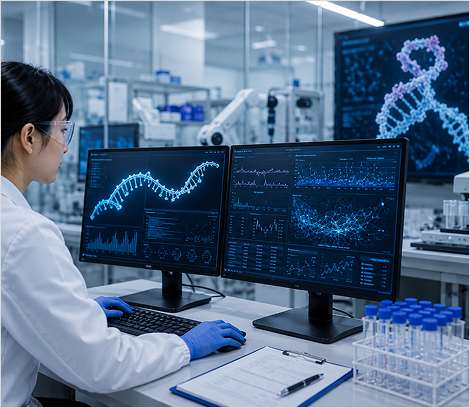
ADC 전용 생산 시설
세계 최고 수준의 항체 생산 인프라 기반
신속하고 유연한 ADC 생산 지원
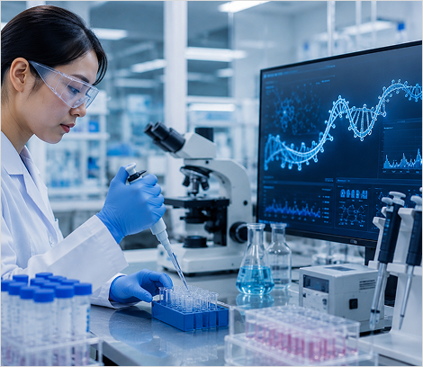
Quality & Supply Chain
안정적인 공급망과 글로벌 수준의
품질 관리 시스템 운영
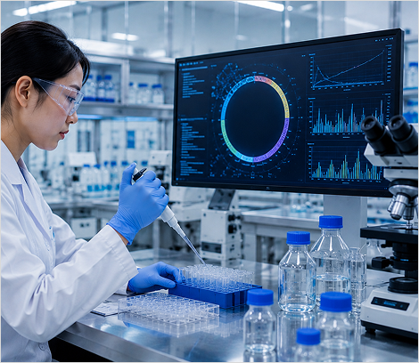
Flexible Manufacturing
고객 니즈에 맞춘 다양한 생산 옵션 제공